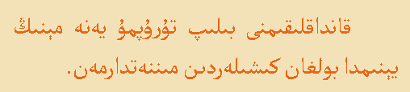
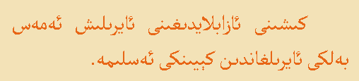
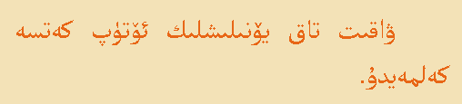
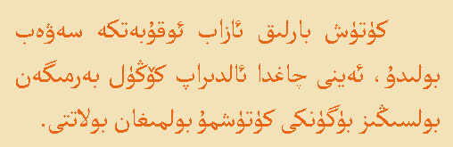
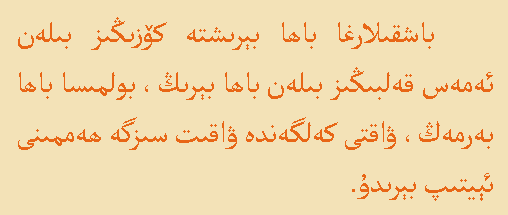
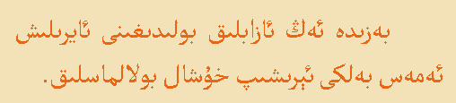
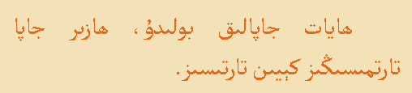
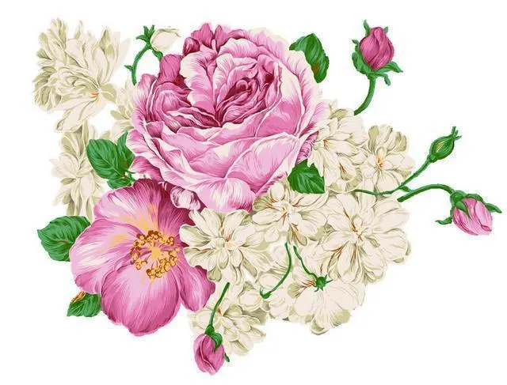

ھىكمەت
- كۈندە بىر ھىكمەت
- ئەربابلارنىڭ سۆزى
- ئەجەپ جاھان ھە بۇ
- ھايات ھېچكىمگە ئۆچ ئەمەس
- !مەن بىر ئانا
- غەلبە قازانغانلارنىڭ نەسىيتى
،كۆڭلۈڭدىكى ئادەمنىڭ قەيەردە بولىشى مۇھىم ئەمەس
.مۇھىمى سەن ئۇنىڭ كۆڭلىنىڭ قانداق يىردە
، يا كۆڭلۈڭنى تولدۇرىدىغان بىر كىشىڭ بولسۇن
.يا ئۆزۈڭنى بېغىشلايدىغان بىر ئىشىڭ بولسۇن
.... بىراۋنىڭ بىرسىگــە ئاشىق بولغىننــــى كۆرسەڭ نەرىنـى ياخشــــى كۆردۈڭ دەپ سورىمــا ! چۈنكــــى مۇھەببەت كۆزنىڭ ئـەمـەس ، كـۆڭـۈلنىڭ ئىشــــــى
«توغرا » نى دېيىش ئۈچۈن خەقنىڭ كۆزىگە باقىسەن، «راست»نى دېيىش ئۈچۈن يۈرىكىڭگىلا
قەددى-قامىتى نە كىرەك ۋىجدان غورۇرى بولمىسا
ئاي جامالى نە كىرەك شەرمى ھاياسى بولمىسادىلدىكى دەرتلەر تىلدا يوق
لەۋدىكى كۈلكە دىلدا يوق
،ئادەتتىكى ئادەملەرنىڭ مەسلىھەتىگە بەك قۇلاق سېلىپ كەتمە، ئۈنۈمسىز
.ئۈنۈملۈك بولغان بولسا ئۇلار ئادەتتىكى ئادەم بولمىغان بولاتتى
ئەڭ ئىسىل ھېكمەتلەر
      بەخىت دىگەن نىمە ؟
سىز كەمبەغەل بولسىڭىزمۇ، سىزدىن ئايرىلمايدىغان بىر ئادىمىڭىزنىڭ بولغىنى بىر بەخىت
سىز ئاغرىپ يېتىپ قالغاندا، ئەھۋالىڭىزدىن خەۋەر ئالىدىغان ئادەمنىڭ بولىشىنىڭ ئۆزى بىر بەخىت
سىز يالغۇزلۇق ھېس قىلغاندا، سىزنى باغرىغا باسىدىغان ئادىمىڭىزنىڭ بولىشى بىر بەخىت
سىزنىڭ كۆڭلىڭىز يېرىم بولغاندا، سىزگە تەسەللىي بېرىدىغان كىشىنىڭ بولغىنى بىر بەخىت
سىز قېرىپ مۈكچەيگەندە ھەمراھ بولىدىغان كىشىنىڭ بولغىنى بىر بەخىت
سىز خاتالىق ئۆتكۈزسىڭىزمۇ كەچۈرۋېتىدىغان كىشىڭىزنىڭ بولغىنى بىر بەخىت
چارچىغىنىڭىزدا سىزنىڭ ھالىڭىزغا يېتىدىغان كىشىنىڭ بولغىنى بىر بەخىت
بەخىت ھەرگىزمۇ يىنىڭىزدا نۇرغۇن ئادەملەرنىڭ بولغىنىدا ئەمەس، يىنىڭىزدا سىز بىلەن ھەمدەم بولغۇدەك دوسىتىڭىز بولسا بۇنىڭ ئۆزى بىر بەخىت
بەخىت سىزنىڭ قانچىلىك پۇلىڭىز بولىشىدا ئەمەس، سىزنىڭ ئۆزىڭىزنىڭ ياقتۇردىغان ئىشىڭىزنى قىلالىغىنىڭىز بىر بەخىت
بەخىت سىزنىڭ ھەمرايىڭىزنىڭ قانچىلىك چىرايلىق بولىشىدا ئەمەس، كۈندە ئۇنىڭ ئىللىق تەبەسسۇمىنى كۆرەلىشىڭىزنىڭ ئۆزى بىر بەخىت
كەمچىلكى يوق دوست ئىزدەيدىغان
كىشىنىڭ دوستى بولمايدۇ
بۇرۇن بىر بوۋاي ئۆتكەنىكەن. ئۇ كىچىكىدىن تارتىپلا ئۆزىگە كەمچىلىكى يوق دوست تاپماقچى بولسىمۇ، تاكى چېچى ئاقىرىپ كەتكۈچە بۇنداق ئادەمنى تاپالماپتۇ. ئۇ، ھايۋانات دۇنياسىدىن كۆڭلۈمدىكىدەك بىرەر دوست تېپىۋالسام ئەجەب ئەمەس، دەپ ئويلاپتۇ-دە، چوڭ ئورمانغا قاراپ يول ئاپتۇ.
بوۋاينىڭ دوست ئىزدەپ كەلگەنلىكىنى ئاڭلىغان ھايۋانلارنىڭ ھەممىسى ئۇنى بەس–بەستە قارشى ئاپتۇ.
- ئىككىمىز دوست بولايلى،- دەپتۇ مايمۇن يېڭىلا ئۈزگەن قىپقىزىل يوغان شاپتۇلنى بوۋايغا ئۇزىتىپ،- مەن ھەر كۈنى سىزگە ياۋا مېۋىلەرنى ئۈزۈپ بېرىمەن!
-بولمايدۇ! سېنىڭ بىر كەمچىلىكىڭ بار- ھايۋانلار ئىچىدە ئەڭ كەپسىز سەن. دەپتۇ بوۋاي بېشىنى چايقاپ.
-ئىككىمىز دوست بولايلى! مەن ھەر كۈنى سىزگە ياردەملىشىپ ئېغىر ئەمگەكلەرنى قىلىشىپ بېرىمەن،-دەپتۇ چوڭ پىل قىزغىن ھالدا ئۇزۇن خارتومىنى سوزۇپ بوۋاي بىلەن كۆرۈشمەكچى بولۇپ.
-ياق!- دەپتۇ بوۋاي ئالدىراپ –تېنەپ قولىنى ئارقىغا يوشۇرۇپ،- سېنىڭ بىر كەمچىلىكىڭ –مىجەزىڭ بەك چۇس، ئاچچىقىڭ كەلسە كۆزۈڭگە ھېچ نەرسە كۆرۈنمەيدۇ.
توز قانات–قۇيرۇقلىرىنى كېرىپ، پىرقىراپ ئۇسسۇل ئويناپ:
-ئىككىمىز دوست بولايلى، مەن ھەر كۈنى سىزگە ئۇسسۇل ئويناپ بېرىمەن،- دەپتۇ.
-بولمايدۇ!- دەپتۇ بوۋاي توزغا قاراپمۇ قويماي،-سېنىڭ بىر كەمچىلىكىڭ، سەن ئەتىدىن–كەچكىچە باشقىلار بىلەن گۈزەللىك تالىشىپ، ئۆزۈڭنىڭ گۈزەللىكىنى ماختايسەن.
-سىلەر ئادەملەرنىڭ «كەمچىلىكى يوق دوست ئىزدەيدىغان كىشىنىڭ دوستى بولمايدۇ» دېگەن بىر سۆزۈڭلار بارغۇ،- دەپتۇ تاقەتسىزلەنگەن جىگدىچۈك،- سىز ئەمدى قايتىپ بېرىپ يەنە يەككە–يېگانە ياشاۋېرىڭ. بىزنىڭ بۇ يەردىن كۆڭلىڭىزدىكىدەك دوستنى مەڭگۈ تاپالمايسىز.
ئۇنىڭ سۆزى تۈگىشى بىلەن ھايۋانلار گۈررىدە تارقىلىپ كېتىپتۇ.
كېيىن بىلىملىك، ئاق كۆڭۈل بىر كىشى بوۋايغا:
-باشقىلاردىن بىر ئازمۇ كەمچىلىكى بولماسلىقنى تەلەپ قىلىش مۇمكىن ئەمەس. مۇھىمى، باشقىلارنىڭ كەمچىلىكىنى تۈزىتىۋېلىشىغا قىزغىنلىق بىلەن ياردەم بېرىش كېرەك دەپتۇ.
قىستۇرما:
بىز بۇ دۇنيانى ھەر قانچە ئىزدەپ–ئاختۇرساقمۇ، قىلچە ئەيىب–نۇقسانى يوق مۇكەممەل ئادەمنى تاپالمايمىز. ھەر قانداق بىر ئىنسان ھامان مەلۇم ئاجىزلىق، كەمچىلىكلەرگە ئىگە بولغان بولىدۇ. بىز بۇ نۇقتىنى دادىللىق بىلەن ئېتىراپ قىلىشىمىز لازىم ھەمدە ئىمكانىيەتنىڭ بارىچە ئۆزىمىزدىكى ئەيىب-نۇقسانلارنى تۈزىتىش ئۈچۈن كۈرەش قىلىشىمىز لازىم.
مەيلى دوست تېپىڭ ياكى ئۆزىڭىزگە ھەمراھ ئىزدەڭ ھامان كەڭ قورساق بولۇڭ. ھەرگىزمۇ كىشىلەرنىڭ مەلۇم كەمچىلىكىگىلا ئېسىلىۋالىدىغان ۋە ئۇنى شۇ تۈپەيلىلا كەمسىتىدىغان ئىشنى قىلماڭ. بىلىڭكى، سىزمۇ ئەيىب-نۇقسانسىز ئەمەس، بەلكىم سىزنىڭ كەمچىلىكىڭىز باشقىلارنىڭكىدىنمۇ ئېغىر، يىرگىنىشلىك بولۇشىمۇ مۇمكىن. كەمچىلىكى بار ئىكەن، دەپلا بىراۋنى چەتكە قېقىشقا بولمايدۇ. كۈچىڭىزنىڭ يېتىشىچە باشقىلارنىڭ كەمچىلىكىنى تۈزىتىۋېلىشىغا ياردەم بېرىڭ. پەقەت دوستانە كۆيۈنۈش، كەڭ قورساقلىق ئارقىلىقلا ئارىدىكى ئاجىزلىقلارنى تۈگەتكىلى، مۇستەھكەم دوستلۇق ئورناتقىلى بولىدۇ.
ئەجەپ جاھان ھە بۇ
بىر ئەر ئۆينى بېزەپ، ئايالىغا يارىماي بالادا قالدى؛ بىر ئانا ئۈچ بالىسى بىلەن، يامغۇرغا قارىماي تالادا قالدى بىر ئايال تېخىچە ئۆيگە قايتمىغان يولدىشىغا تېلېفون قىلىپ، ئۆيگە پۇت دەسسىمەسلىكنى ئېيتىپ ئاۋارە؛ بىر مەزلۇمە يىراقتىكى ۋاپادارىنى سېغىنىپ ئەسلەپ، يۈرەكلىرى سەكپارە... بىرى يېڭى ئالغان ئۆيىنىڭ جابدۇقلىرىنى تاللىيالماي باش قېتىپ؛ بىرى كىرىدىغان ئۆيى يوق سرتلاردا يېتىپ... بىرى توينى تۈگىتىپ، كەچلىك زىياپەتكە ئۈستى باشنى باشقىچە يېڭىلاشنىڭ تەييارلىقىدا؛ بىرى ئۈستىدىكى ھەپتىدىن بېرى كىيىلگەن كىيىمنى قانداق ئالماشتۇرۇشنىڭ ھەيرانلىقىدا... بىرلىرى ماشىنىسىنى يېڭى پاسوندىكىگە ئالماشتۇرغىلى مەخسۇس سېتىش دۇكىنىغا كەلدى؛ بىرلىرى ماشىنىسىنى سېتىپ خىراجەت غەملىگىلى نىمكەش ماشىنا بازىرىغا كىردى... بىر بالا دادىسىدىن خاپا، دوستىغا ئىچىنى تۆكىۋاتىدۇ؛ بىر بالا دادىسى يىراقتا، پىراق ئوتىدا يۈرىكىنى تۇتىۋاتىدۇ... پەسىل ئالماشسا كىيىدىغان ئايىقىنىڭ يوقلىقىدىن زارلىغان ئۇ كىشى پۇتىدىكى ئايىقىنى تېخى ئالدىنقى كۈنى ئالغان ئىدى؛ ئىككى قولىدىكى ھاسىنى قويۇپ، كۈلۈپ ئالدىمدا ئولتۇرغان بۇ كىشى پۇتىنىڭ يوقلۇقىنى ئۇنتۇپ قالغان ئىدى... ئوقۇشنىڭ تەسلىكى، دەرسنىڭ ئېغىرلىقى ئۈستىدە ھال ئېيتىۋاتقان بالىسىنى ئاتىسى تەستە بەزلەۋاتاتتى؛ ئوقۇش ئىستىكى، پۇرسەتنىڭ يوقلۇقىدىن ئامالسىز قالغان قېرىنداشلار بىر بىرى ئۈچۈن ئامال ئىزدەۋاتاتتى... بىرلىرى تاپقان پۇللىرى، يۇقىرى مائاشى ھەققىدە كۆپچىلىكنىڭ ئالدىدا سۆز قىلدى، ئەمما بىرسىگە بېرىدىغان نەچچە يۈز يۈەن پۇل يېنىدىن چىقمىدى؛بىرلىرى تىنىچقىنە سۆز ئاڭلاپ، تۈگىگەندە ھېچكىمگىمۇ بىلىندۈرمەي چىقىپ كەتتى، ئالدىغا ئۇچرىغان بىر ھاجەتمەن قۇرۇق يانمىدى... يۇقىرىغا قاراپ پىكىر قىل، تۆۋەنگە قاراپ قانائەت قىل، سەن ئىزدەۋاتقان نەرسە شۇ ئىككىسىنىڭ ئوتتۇرىسىدا؛ ھېچكىم دۇنياغا كەلگىنىدىن باشلاپلا توققۇزى تەل تۇغۇلمىغان. بەزىلەر نامرات ئائىلىدە، بەزىلەر باي ئائىلىدە تۇغۇلۇپ قالغان. قانائەت بولمىسا بايمۇ بايلىقىدىن قاقشايدۇ، نامراتمۇ نامراتلىقىدىن قاقشايدۇ. شۇڭا تۇرمۇشىڭىزدا ھەرۋاقىت قانائەت قىلىشنى ئادەت قىلىڭ! ھايات ھېچكىمگە ئۆچ ئەمەس
ھەر قانداق ئىشنىڭ خەيرىلىك تەرپىنى ئويلاش ياخشى كىشىلەرنىڭ ئادىتى. ھەرقانداق ئىشلاردىن ئۈمىدۋار بۇلۇشمۇ ياخشى كىشىلەرنىڭ ئادىتى، ھايات ھېچكىمگە ئۆچ ئەمەس. ئۇ ھەممە كىشىگە باراۋەر. ئۇ ھەممە كىشىنى بەخىتلىك قىلىدۇ. بەزىلەرنى ياشاش جەريانىدا بەخىتلىك قىلسا، بەزىلەرنى ئۆلگەندىن كىيىن بەخىتلىك قىلىدۇ. بەزىلەرنى ھايات ۋاقتىدا ئىززەتلىك قىلسا، بەزىلەرنى ئۆلگەندىن كىيىن ئىززەتلىك قىلىدۇ. ھەركىمنىڭ بۇ دۇنيادىن ئېلىپ كىتىدىغىنى ئۆزىنىڭ قىلغانلىرى، ئەتكەنلىرى. ھەممە نەرسە ئۆزىنىڭ ۋاقتى بىلەن كېلىدۇ، ئۆز قارارىدا كېلىدۇ ئەگەر بىراۋنىڭ قاقاقلاپ كۈلگەن ۋاقتىدا كۆرگەن بولسىڭىز ئۇ دەل شۇنىڭ كۈلۈشىگە تېگىشلىك بولغان ۋاقتىدۇر. ئەگەر بىراۋنىڭ يىغلاۋاتقان ۋاقتىنى كۆرگەن بولسىڭىز ئۇ دەل شۇ كىشىنىڭ يىغلاشقا تىگىشلىك بولغان ۋاقتىدۇر. ھايات ھەممىگە باراۋەر بىرىلگەن. ھەممە تۇغۇلىدۇ، ئۆلىدۇ، كېلىدۇ، كېتىدۇ، بېرىدۇ ئالىدۇ، ھېچقانداق تەقدىرنىڭ ئۇرۇنلاشتۇرۇشىدىن خالىي ھالدا مەيدانغا كىېلەلمەيدۇ. تەقدىر ھەممە كىشىگە بەختنى شۇنداقلا بەختسىزلىكىنى ئوخشاش ھالدا ئورۇنلاشتۇرغان. پەقەت ئۇلارنى ئوخشىمايدىغان ۋاقىتقا تەقسىملىگەن. ئاخىرىدا ھەممە كىشىلارنى ھەر خىل ئۇسۇللار ئارقىلىق بەخىتلىك قىلغان. شۇڭلارشقا، ھاياتتىن ھەرگىز ئۈمىدسىزلەنمەڭكى ھامان بىر كۈنى بەخىت سىزنى ئىزدەپ تاپىدۇ. ھازىر سىزنىڭ قىيىنچىلىقلارغا ئۇچرىشىڭىز، ئازابلارغا مۇپتىلا بۇلغىنىڭىز، سىزنىڭ بەخىتسىز ئىكەنلىكىڭىزدىن دېرەك بەرمەيدۇ. پەقەت سىزلا بەخىتلىك بۇلىدىغان ۋاقتىڭىز كەلمىدى خالاس. ئازراق ساقلاڭ. بەلكىم كېيىنكى قېتىم بەخىتلىك بولۇش نېۋىتى سىزنىڭ بۇلىشى مۇمكى بەھرى -پۇل خىجالىتى جېنىڭىزدىن ئۆتكەندە ! ھايات سېنى قايتا سىنايدۇ
پۇل خىجالىتى جىنىڭىزدىن ئۆتكەندە ، بىراۋلار تەرىپىدىن كەمسىتىلگەندە كۆزگە ئىلىنمىغاندا ، پۇل سەۋەبلىك ئاتا ـ ئانڭىزنىڭ كىسلنى داۋالىتالمغاندا، يەنە شۇ پۇل سەۋەبلىك غورورىڭىز سۇندۇرۇلغاندا كىچىلىرى ئارزۇيىڭىز ئۈچۈن ئۇيقىڭىز كەلمىگەندە ، سىز ئورنىڭىزدىن دەس تۇرىسز ، مۇۋەپپىقىيەت يولىغا قەدەم ئالىسز، ئەمما بۇ يول بەكلا جاپالىق ئىرادىڭىزنى سىنايدۇ ، سەۋرجانلىقىڭىزنى سىنايدۇ، ئىزچىللىقىڭىزنى سىنايدۇ، ئاخىرغىچە بەرداشلىق بىرەلىسىڭىز ، ئاندىن مۇۋەپپىقىيەتنىڭ يۇقىرى چوققىسىغا چىقالايسز بۇ چاغدا سزنى كۆزگە ئىلمىغانلارمۇ بىشىنى ئىگىز كۆتۈرۈپ سىزگە قاراشقا مەجبۇر بولىدۇ ! ئېسىڭىزدە بولسۇن پۇل ھەممىگە قادىر ئەمەس ، ئەمما پۇلىڭىز بولمسا سىز ھېچكىمگە لازىم ئەمەس!مەن بىر ئانا
سىنى بىر ھۈجەيرىدىن ياشاشقا لايىق جانلىق ھالىتىگە كەلتۈرگەن مەن. سىنى ئەڭ ئېغىر ئازاب-ئوقۇبەتلەر ئىچىدە تۇغدۇم، ئەڭ بۈيۈك سۆيۈنچىلەر ئىچىدە قولۇمغا ئالدىم. ھاياتقا كۆنگەن مۇستەقىل ياشىيالايدىغان بىر ئىنسان بالىسى ھالىغا كېلىشىڭ ئۈچۈن سىنى سۈتۈم بىلەن بەزلىدىم. تۈنلەر بويى بېشىڭدا قاراپ ئولتۇردۇم، تەن ھارارىتىم بىلەن ئىسسىتتىم، مېھرىم بىلەن باغرىمغا باستىم.
ساڭا تۇنجى ھەرىكەتنى، تۇنجى كۈلۈشنى، تۇنجى بېقىشنى، تۇنجى بوغۇم (تىل) نى مەن ئۆگەتتىم. ساڭا تۇنجى ناخشىنى مەن ئېيتىپ بەردىم. سىنى مىننەتسىز، مەنپەئەت-تاماسىز، پاك-پاكىز ھالدا تۇنجى بولۇپ مەن سۆيدۈم. ساڭا ھاياتتا دەسلەپ لازىم بولىدىغان دەرسلەرنى مەن بەردىم. سىنىڭ يۈزۈڭدىن ئاچچىقلارنى مەن ئاۋۋال تۇيدۇم، تۇنجى يىغلاشلىرىڭنى كۆكسۈمدە بەزلىدىم. تۇنجى ئەندىشىلىرىڭنى ماڭا سۆزلىدىڭ. تۇنجى سىرىڭنى ماڭا ئاچتىڭ، مېنى تۇنجى دوست تۇتتۇڭ.
!مەن بىر ئانا
ماڭا ھەر زامان ئىشەندىڭ. تۇنجى مۇھەببىتىڭنى مەن ھېس قىلدىم. سىنىڭ دەرد-پەرىشانلىقىڭ مىنىڭ دەرد-پەرىشانلىقىم بولدى. دېرىزە تۈۋىدە سىنى كۈتتۈم، كەلگىنىڭدە ئىشىكلەرگە چاپتىم. سىنى ھەرۋاقىت ئوخشاش تۇيغۇلار بىلەن باغرىمغا باستىم، سەندىن ئىپتىخارلاندىم، سەن بىلەن تاجلاندىم، شەرەپلەندىم.
!مەن بىر ئانا
مەن ئادىمىيلىكنىڭ مۇقەددىمىسى ۋە خاتىمىسى. مەن ھاياتقا شەكىل بەرگەن ھۈنەرۋەن. خالىغان رەڭلەرنى قوللىنىپ خالىغانچە ئويىمەن. مېڭەڭگە تۇنجى نەقىشلەنگەن سۆزلەر مېنىڭدۇر، قەلبىڭدىن تۇنجى ئورۇن ئالغان تۇيغۇلار مىنىڭ تۇيغۇلىرىمدۇر. مەن سېنىڭ ياخشىلىق ۋە يامانلىقىڭدۇرمەن. مەن خالىسام سىنى سۆيگۈ، قېرىنداشلىق ۋە دوستلۇق بىلەن چوڭ قىلىمەن، خالىمىسام ئىچىڭنى ئۆچ-ئاداۋەت، دۈشمەنلىككە تولدۇرىمەن. مەن دۇنيانى تەرتىپىگە سالغان نىزام-بۇيرۇقمەن.
!مەن بىر ئانا
مەن سەبىر-تاقەتلىك ۋە چىدامچانلىق. مەن ھەم ئەڭ يۇمشاق ۋە ئەڭ قاتتىقتۇرمەن. جەسۇرلۇقنى مەندىن قانداق ئۆگەنگەن بولساڭ، قورقۇنچنىمۇ مەن ساڭا ئۆگەتتىم. سىنى تۇنجى سۆيگەنمۇ، تۇنجى سىلكىشلىگەنمۇ مەن. سۆيۈش، ئاشىق بولۇش، شەپقەت، ئۆچ-ئاداۋەت، دوستلۇق ۋە دۈشمەنلىك تۇيغۇلىرىڭنىڭ ھەممىسى مەندە.
!مەن بىر ئانا
بىر ئاچچىق (ئازاب) تۇيساڭ مېنى چاقىرىسەن. مەن تەسەللىيدۇرمەن. ئۆلسەممۇ كۆزۈم ئارقامدىدۇر. سىنىڭ غېمىڭنى يەيمەن. مەن سېخى بولغىنىمغا ئوخشاش خەسىس (بېخىل)، قىزغانماس كۆرۈنگىنىمگە ئوخشاش يەنە قىزغانچۇقمەن.
شۇنداق، سىنى قىزغىنىمەن. سەن مىنىڭ ئەسەرىمسەن، سەن مىنىڭ ئەمگىكىمسەن، سەن مىنىڭ گۈزەل كۈنلىرىم، ئۆتكەن ئۆمرۈم، پۈتۈن ئەسلىمىلىرىمسەن. ئاق چاچلىرىم، پۈكۈلگەن تېنىم، يوقالغان گۈزەللىكىم، خۇشاللىقىم، ئۈمىدلىرىم بەدىلىگە ئېرىشكەن بارلىقىمسەن. شۇ سەۋەبتىن سىنى ئاۋايلايمەن (ئاسرايمەن). سىنى قىزغىنىمەن. بۇ تۇيغۇم بىلەن سىنى بىئارام قىلىمەن، نارازىلىقىڭنى قوزغايمەن، كۆڭلۈڭنى يېرىم قىلىمەن، سىنى ماڭىلا خاس (تەۋە) بولسىكەن دەيمەن. بۇ سەۋەبتىن سىنى قىزغىنىمەن.
!مەن بىر ئانا
مەن ھۆرمەتلىكمەن. ئالدىمدا تىز چۆكۈشۈڭنى ئىستەيمەن. كۆڭۈل تۆرىڭدىن ئورۇن ئېلىشنى خالايمەن، ھەققىمنىڭ ئۆتۈلىشىنى خالايمەن. ئۇنتۇلۇشتىن قورقىمەن. ئورنۇم باش ئۈستۈڭدە بولسىكەن دەيمەن. بۇ مىنىڭ ھەققىم.
!مەن بىر ئانا
ئاخىرقى نەپسىمدە
ھەر زامان
«سۈتۈم ۋە ھەققىم-
سەندە پاكىز ئادا بولسۇن، قوزام!!!»
...دەيمەن
ــــ روكېفېللېر
ــــ باففېت
ــــ جېف بىزوس